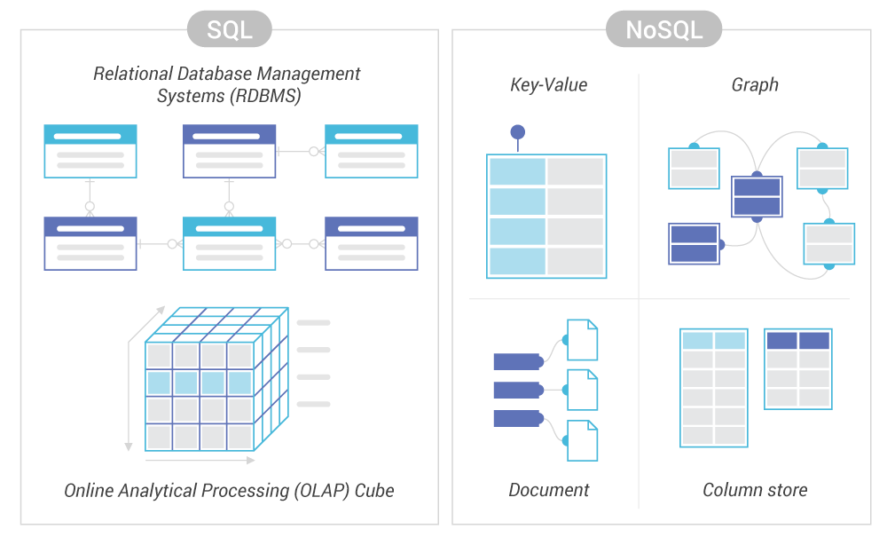
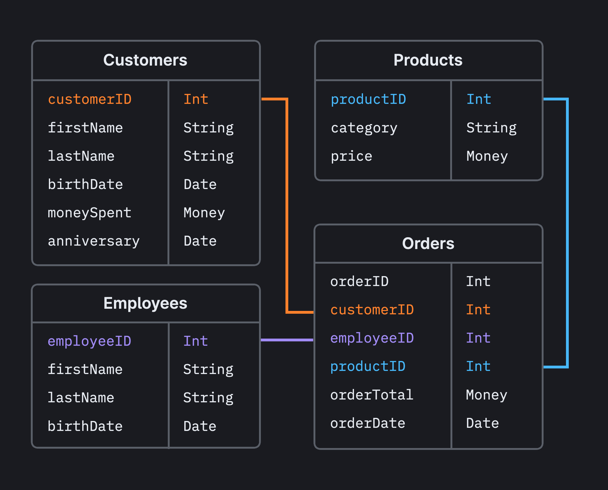

System Design Mastery
Master scalable systems with premium insights
🗄️ Database: SQL vs NoSQL
1️⃣ What is it?
🔹 SQL Databases (Relational)
SQL databases store data in tables with fixed schema and use SQL (Structured Query Language).
- Data in tables (rows & columns)
- Fixed schema
- Strong consistency (ACID)
Examples:
MySQL, PostgreSQL, Oracle
🔹 NoSQL Databases (Non-Relational)
NoSQL databases store data in flexible formats like documents, key-value, wide-column, or graphs.
- Schema-less or flexible schema
- Designed for huge scale
- Eventual consistency (BASE)
Examples:
MongoDB, Redis, Cassandra, DynamoDB

📊 SQL vs NoSQL Diagram
When to use / not use
✅ Use SQL when:
- Data relationships matter
- Accuracy is critical
- Transactions are critical
- Consistency is required
Examples:
Payments, Banking
❌ Avoid SQL when:
- Schema changes frequently
- Massive scale required
- Very high write traffic
✅ Use NoSQL when:
- Huge user base
- High read/write traffic
- Flexible data
- High throughput, low latency needed
Examples:
Social media feeds, Logs & analytics, Caching, Real-time tracking
❌ Avoid NoSQL when:
- Strong consistency required
- Financial systems
2️⃣ Types of SQL Databases
🔹 Relational SQL Databases
- Data is stored in tables (rows & columns)
- Tables are connected using relationships (joins)
Examples:
MySQL, PostgreSQL, Oracle Database
Why SQL (system design reason):
- Strong ACID
- Data correctness
- Structured data
- Transactions
👉 SQL type summary:
One main type → relational → correctness first

📊 Relational (SQL type) Diagram
3️⃣ Types of NoSQL Databases
NoSQL has multiple types, because it solves different scale problems.
1️⃣ Key–Value Store
Data = key → value
📌 Example:
Key → Value
user123 → online
session_id → user_data
Databases:
Redis, DynamoDB
Used for:
Cache, Sessions, Tokens
👉 Fastest NoSQL type
2️⃣ Document Database
Data stored as JSON-like documents
📌 Example:
{
"user": "anna",
"posts": 120,
"followers": 500
}
Databases:
MongoDB
Used for:
User profiles, Posts, Content systems
👉 Most popular NoSQL
3️⃣ Wide-Column Store
Data stored in rows with flexible columns
Databases:
Cassandra, HBase
Used for:
Huge datasets, Time-series data, Logs
👉 Used by big-scale systems
4️⃣ Graph Database
Data stored as nodes & relationships
Databases:
Neo4j
Used for:
Social networks, Recommendations, Fraud detection
👉 Best for relationship-heavy data
4️⃣ Key Comparison Table
| Aspect | SQL | NoSQL |
|---|---|---|
| Schema | Fixed | Flexible |
| Consistency | Strong (ACID) | Eventual (BASE) |
| Scaling | Vertical mainly | Horizontal |
| Joins | Easy | Hard / not supported |
| Best for | Transactions | Massive scale |
| CAP | CP | AP |
5️⃣ Real App Connection
🛒 E-commerce
- Orders & payments → SQL
- Product catalog → NoSQL
- Cache → Redis (NoSQL)
💬 Social Media
- User posts → NoSQL
- Relationships → Graph DB
- User accounts → SQL
📱 WhatsApp — SQL + NoSQL together
WhatsApp does NOT use a single database. It mixes SQL + NoSQL, each where it makes sense. This is called Polyglot Persistence.
1️⃣ Where WhatsApp uses SQL
📌 Used for:
- User registration & signup
- Phone number mapping
- Account metadata
- Login & authentication
💾 Example Data:
UserID | PhoneNumber | CreatedAt | Status
❓ Why SQL here?
- Data must be 100% correct
- Strong consistency required
- Transactions needed (ACID)
- If phone mapping is wrong → account breaks ❌
2️⃣ Where WhatsApp uses NoSQL
📌 Used for:
- Messages & chats
- Group messages
- Message status (✔️ ✔️✔️)
- Media message metadata
💾 Example Data:
{"chat_id": "A_B", "message": "Hi",
"timestamp": 17000000, "status": "sent"}
❓ Why NoSQL here?
- Billions of messages per day
- Very high read & write traffic
- Horizontal scaling needed
- Eventual consistency is OK
👉 Key Insight:
Message can be delivered slightly later, but the app must stay up. Users tolerate eventual consistency for messages, but NOT for account data. This is why WhatsApp uses both!
🎯 Summary
WhatsApp uses SQL for strongly consistent user data like accounts and authentication, and NoSQL for highly scalable message storage and delivery.
💡 Pro Tip
SQL databases provide strong consistency and transactional reliability, while NoSQL databases offer flexible schema and horizontal scalability for high-volume systems.